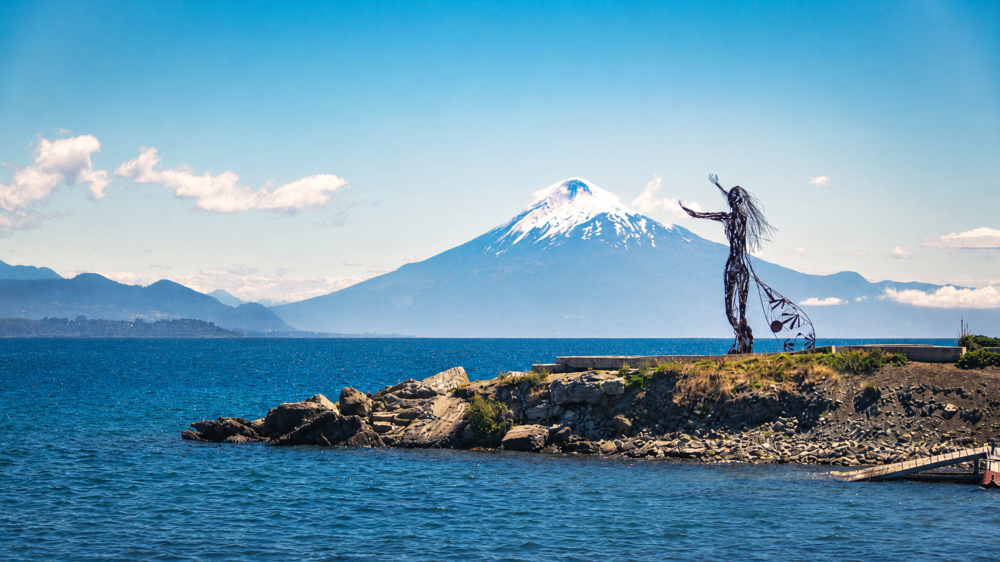

Partners & sponsors
ICH2026 partners and sponsors.
Organizations supporting the ICH2026 scientific meeting in Puerto Varas, Chile.

Partners & sponsors
Organizations supporting the ICH2026 scientific meeting in Puerto Varas, Chile.